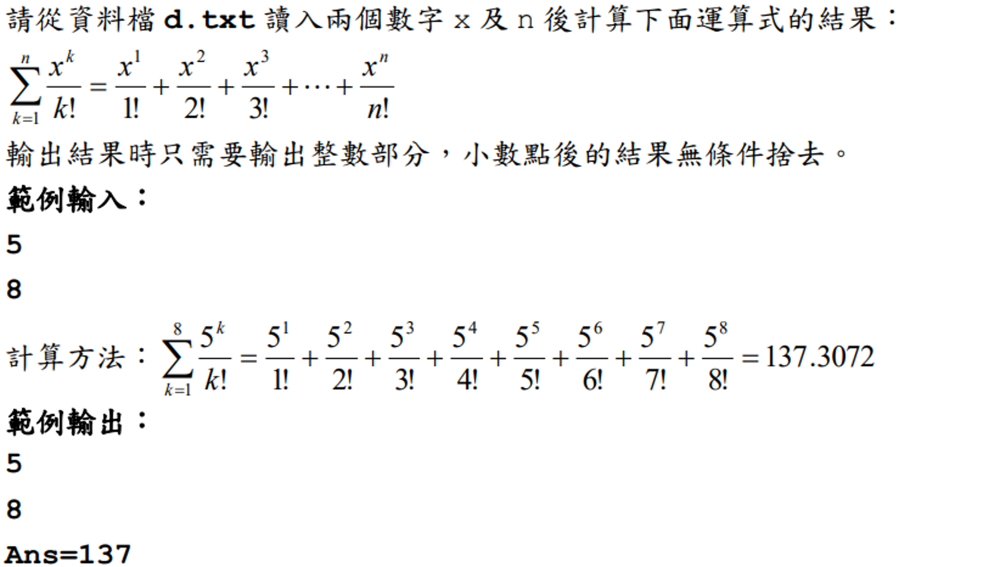

(0)
範例輸入：
12
25
範例輸出：
12
25
Ans=162703
(1)
範例輸入：
9
11
範例輸出：
9
11
Ans=6505
(2)
範例輸入：
11
22
範例輸出：
11
22
Ans=59810
|
#include <stdio.h>
// 計算每次運算式的結果
double count(int x, int n) {
// 計算n次方
double sum = 1;
for (int i = 1; i <= n; i++) {
sum *= x;
}
// 計算n階層
for (int i = n; i >= 1; i--) {
sum /= i;
}
return sum;
}
int main(void) {
// 讀入輸入資料
int num1, num2;
double sum = 0;
scanf("%d %d", &num1, &num2);
// 把每次運算式的結果加到sum
for (int i = 1; i <= num2; i++) {
sum += count(num1, i);
}
// 印出答案
printf("%d\n", num1);
printf("%d\n", num2);
printf("Ans=%d\n", (int)sum);
return 0;
}
|